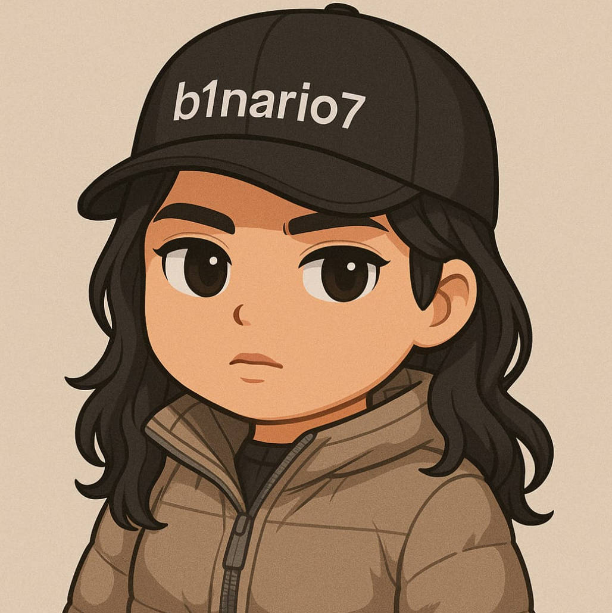

Análisis de ciberseguridad y respuesta a incidentes
Análisis de eventos, revisión de logs, investigación de actividad sospechosa y apoyo a la contención y remediación. Experiencia en triage de alertas y operaciones Blue Team.
Soy Raciel Rivera, analista de ciberseguridad e instructora. Investigo incidentes y transformo el conocimiento técnico en formación práctica a través de Tavoki Security.

Mi trabajo se centra en detectar amenazas, analizar eventos de seguridad e investigar incidentes. Me interesa entender el comportamiento del atacante y convertir los hallazgos en acciones claras.
Como fundadora de Tavoki Security, diseño clases y laboratorios para que otras personas desarrollen habilidades en ciberseguridad: desde los fundamentos hasta el análisis de casos y el uso de herramientas.
La investigación técnica y la enseñanza son parte de mi trabajo.
Análisis de eventos, revisión de logs, investigación de actividad sospechosa y apoyo a la contención y remediación. Experiencia en triage de alertas y operaciones Blue Team.
Diseño de programas, clases y laboratorios de ciberseguridad. Formación con ejercicios guiados, análisis de casos y acompañamiento directo.
Revisión de correos, indicadores de compromiso, comportamiento de archivos y evidencias para comprender una amenaza y documentar los hallazgos.
Revisión de contenido educativo, validación de conceptos y elaboración de explicaciones claras para estudiantes y profesionales.
Contenido técnico y experiencias de aprendizaje que conectan las herramientas con su propósito.
Ejercicios educativos de análisis de logs, phishing, tráfico de red y memoria. Prácticas con herramientas como Splunk, Wireshark y Volatility 3.
Práctica educativa con n8n para conectar el análisis de un correo sospechoso con la consulta de indicadores y la creación de un ticket.
Participación como revisora técnica de material sobre administración de redes con Rocky Linux 9.
Ver publicación ↗Formación en ciberseguridad con fundamentos claros, laboratorios y acompañamiento directo.
Fundamentos, operaciones SOC, análisis de logs, detección de amenazas y respuesta a incidentes con enfoque Blue Team.
Consultar el programa ↗Reconocimiento, enumeración, análisis de vulnerabilidades y explotación en entornos de laboratorio autorizados.
Consultar el programa ↗Comandos, Bash, automatización y análisis de logs para trabajar con Linux en tareas ofensivas y defensivas.
Consultar el programa ↗Consultá modalidades, próximas fechas y disponibilidad de cada programa.
Mi formación incluye seguridad de redes, operaciones Blue Team y educación en ciberseguridad.
Certified Network Security Practitioner · Blue Team Junior Analyst · Certified Cybersecurity Educator Professional.
Para consultar sobre formación en Tavoki Security, colaboraciones o proyectos profesionales, escribime y contame qué estás buscando.